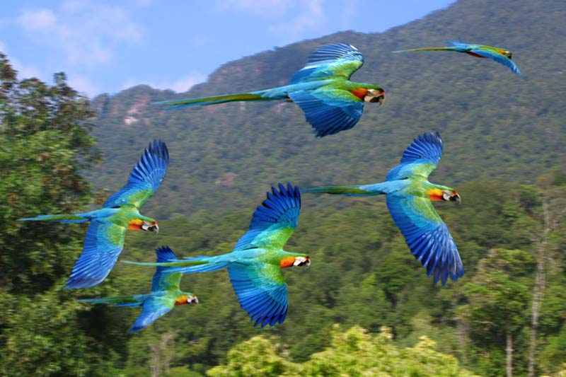
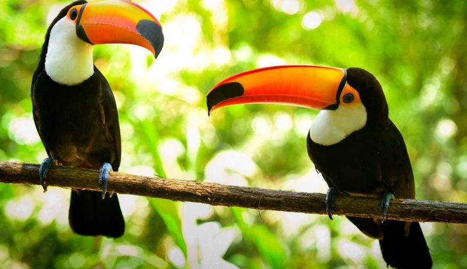
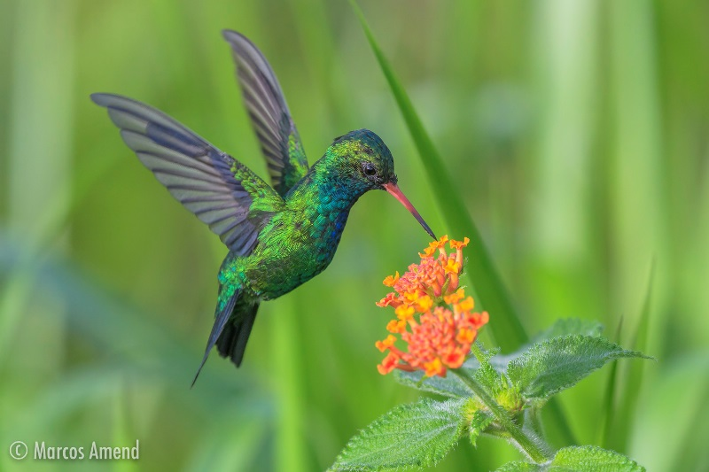

todas as curiosidades que você sempre quis saber em um unico lugar
arara canindé
A arara-canindé, também conhecida como arara-de-barriga-amarela, arari, arara-amarela, arara-azul-e-amarela, araraí e canindé, é uma das mais conhecidas representantes do gênero Ara, sendo uma das espécies emblemáticas do cerrado brasileiro e importante para muitas comunidades indígenas
São araras grandes, podendo medir até 86 cm e pesar entre 995 a 1380 g. A parte superior do corpo possui a coloração azul e a inferior amarela, possui fileiras de penas faciais pretas e garganta também preta.

distribuição geografica e habitat
Panamá, Colômbia, Guianas, Equador, Peru, Bolívia, Paraguai e Argentina. No Brasil ocorrem na região norte, centro-oeste, Bahia, Minas Gerais e São Paulo. Desde 2002 vive na cidade de Campo Grande, capital de Mato Grosso do Sul, onde é facilmente observada.
elas costumam viver em Várzeas com buritizais, babaçuais e beira de mata. Atualmente vive em muitas cidades brasileiras
alimentação e ameaças
É bastante diversificada, mas se alimenta principalmente de frutos e sementes.
Não se encontra em perigo iminente. Mas como a maioria dos animais brasileiros, essa espécie apresenta problemas localmente, ou seja, é abundante em alguns locais e em outros não é muito frequente, pois a destruição do ambiente nesses locais afastou as araras. É muito encontrada em cativeiro.
tucano
Os tucanos são aves que correspondem à família Ramphastidae, vivem nas florestas tropicais da América Central e América do Sul. A família inclui cinco gêneros e mais de quarenta espécies diferentes.

posição geografica e alimentação
Tucano é uma ave pertencente à família Ramphastidae, que engloba animais com bico longo, colorido, cortante e leve. Esses animais ocorrem apenas no Neotrópico, distribuindo-se do México à Argentina. Alimentam-se de frutos, entretanto, esse não é o único alimento de sua dieta; também ingerem jovens de outras espécies de aves, ovos e pequenos artrópodes, como gafanhotos e cigarras. Ao se nutrir de frutos e espalhar as sementes pelo ambiente, os tucanos atuam no processo de dispersão de sementes, sendo, portanto, fundamentais na regeneração de florestas.
Quais são as características dos tucanos?
Tucanos são aves encontradas na região Neotropical, ocorrendo, portanto, também em nosso território nacional. Geralmente, ocupam regiões florestais, entretanto, a espécie Ramphastos toco, popularmente chamada de tucano-toco ou tucanuçu, pode ser observada em áreas abertas.
Sem dúvida, a característica mais marcante de um tucano é seu bico grande, achatado lateralmente e colorido. Além de garantir a alimentação, o bico funciona como ornamento sexual, como caixa de ressonância e como uma área para a troca de calor, destacando-se por ser altamente vascularizado.
Tucanos apresentam tamanho variado a depender da espécie, tendo entre 46 cm e 66 cm de comprimento. Apesar de muitas pessoas acreditarem que eles se alimentam exclusivamente de frutos, podem também comer ovos, pequenos artrópodes, como gafanhotos e cigarras, e até filhotes de outras espécies de aves.
beija-flor
Beija-flor é o termo popular usado para referir-se a várias aves nativas das Américas que constituem a família biológica Trochilidae. Com cerca de 360 espécies, ocorrem desde o Alasca à Terra do Fogo, mas a grande maioria das espécies são encontradas nos trópicos.

alimentatação
A alimentação destes animais consiste basicamente em pequenos invertebrados (insetos, como aranhas, formigas, moscas) e o néctar das flores. Podem realizar grandes migrações em épocas de escassez de alimento, podendo viajar por mais de 100 km. Durante a muda, aumentam o consumo de invertebrados, pois o consumo de proteínas é importante na fabricação de novas penas com cores vibrantes. A interação entre os beija-flores e as plantas originou diversas especializações para ambos os organismos, de modo que alguns estudos associam correspondência entre a morfologia de estruturas florais com a morfologia destas aves. Os agentes polinizadores são extremamente importantes para a reprodução das plantas que necessitam destes animais na dispersão e captura do pólen.
curiosidades
Durante o período reprodutivo o macho realiza voos bem próximos à fêmea que deseja acasalar para mostrar sua plumagem e sua destreza no ar, enquanto a fêmea assiste o cortejo e decide se aceita aquele macho ou não. Os beija-flores são poligâmicos, ou seja, um macho tentará se reproduzir com mais de uma fêmea. Os ninhos e o cuidado parental são feitos exclusivamente pela fêmea, que utiliza pequenos ramos, musgos, plumagem e até teia de aranha para construí-lo.
O menor beija-flor do mundo mede 5 centímetros de comprimento ao todo e é encontrado em Cuba, chama-se Beija-flor-abelha, sua cauda e bico são maiores do que o corpo. Enquanto o maior beija-flor já encontrado mede 20 centímetros é encontrado nos Andes (América do Sul) e foi nomeado de beija-flor-gigante. No Brasil, os maiores beija-flores são encontrados na Amazônia e não chegam a medir 20 centímetros.